变形记
目录
1 磨刀
在光线明亮的地方，竖持一把刀，令其刃口正对着自己的眉心。若这把刀足够锋利，就一定没有人能够看到锋线。原因很简单，人眼分辨细微之物的极限是 0.1 mm，而一把锋利的刀，刃口的厚度可以到微米级。有的刀用起来也能让人觉得它很锋利，但是在本该看不见锋线之处，出现了连续或断续的细微亮线，此时它已经钝了。
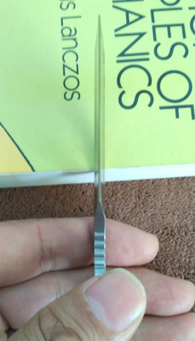
真正的锋利是看不见的，它们要么隐匿于平整的刃区里，要么隐匿于圆滑的刃区里，只是这种隐匿有着严格的一致性。对于徒手磨一把钝得厉害的刀而言，平整的刃区可望而不可及，反而圆滑的刃区更容易得到——再不济，也是三到五重眼皮。
磨刀的时候，手一开始总是不那么稳定，即使饶有经验的磨刀匠也不例外。不稳定的手，会导致刃角产生难以预料的变化。刃角的变化，若是难以预料，会导致磨出的刃区也会难以预料地趋于圆滑。这种圆滑尽管与那些在砂带机上研磨出来的蛤刃（刃缘区域很像蚌壳的边缘）相比，粗笨拙陋，但是只要它能成功隐匿锋线，就很好了，总比那些一边难以忍受圆滑又一边自甘其钝的刀要好得多。
磨刀的时候，要稳定的并非是双手，而是双手与整个身体的关系。只有当这种关系在不断地训练中逐渐趋向于稳定和平衡，方能保证磨出来的刃面足够平整。在这个基础上，再在磨刀过程中有规律地变换刃角，方能磨出真正的蛤刃。
锋线无非是两个刃面的交汇，它的存在完全依赖于刃面上冗余材料的磨除。蓬生麻中，不扶而直。只要有足够好的刃面，自然就有足够好的锋线。孔子所说的中庸之道，我更喜欢从这个角度去理解。
不过，老子说「揣而锐之，不可长葆」，似乎是建议刀不需要太锋利。木秀于林，风必摧之，古往今来，如此附会者不乏其人。他们认为，做人不该锋芒毕露，否则会招人嫉恨。于是，在锋芒毕露的人看来，老子彻头彻尾是消极避世者。
在我看来，老子的话并不玄妙。他不过是在建议不要过于追求锋利。孔子说得更直白，过犹不及。在我看来，与其说老子和孔子这些人是哲学家，不如说他们是生活学家。没有生活学这种学，不过是因为当初名字取得不够正确。
磨刀的时候，过于追求锋利，势必缩减刃角，从而导致刀体变薄，强度下降。这样的刀，虽然锋利，但是在使用时很容易崩口、卷刃甚至断裂。倘若将「揣而锐之，不可长葆」简单理解成，愈锋利，愈容易钝，不就成了变相赞美那些自甘其钝的刀了么？没有人喜欢用钝的刀子去砍柴、切菜和割肉。这一点，一直被道家曲解成清静无为的老子应该也不会例外，类似于那些认为神明自会指引道路的最虔诚的信徒在过马路的时候，不是也要接受红绿灯的指示么？
我用的砥石，比我的刀便宜得多。不过，在砥石方面，我不怎么仇富。倘若有人愿意用价格上万的日本天然砥石磨刀，我不会觉得他在炫富，只会觉得他是在力所能及的前提下愿意为自己的爱好而买单，难能可贵。会磨刀的人不多，愿意用昂贵的砥石去磨刀的人必定凤毛麟角。一个亿万富翁若是每天像我这样过着粗茶淡饭的生活，那么对他而言，贫穷实在也是一种消费。
人应该有点能够持久的爱好，特别是已经有子女的人；否则等自己老了，唯一的爱好就是折磨子女。为了维持在刀具方面的爱好，我先是购置了一块青石、一块金刚石板，还有平时我用来当作砥石底座的一块黑色碳化硼，斥资共约一百块钱。最近购置了一个角磨机和一台小型砂带机，斥资共约四百块钱。这些东西可以用很久，有可能我化为灰烬之后许多年，他们依然可以呆在房间的角落里，在灰尘下面沉默不语。
与有着琴棋书画等方面爱好的人相比，我在爱好方面的投资并不太多。磨刀这种事，不需要买多么贵的刀来磨，家里的菜刀就可以。若还有生活，肯定会有菜刀。不过，那么多有生活的人，却不怎么会磨刀，否则不会有磨刀匠，陶瓷刀卖得也不会那么好。等有一天，我和朋友正常聊天，我们一定会谈自己的孩子。当朋友说起他的女儿钢琴弹得很好，舞蹈也不错的时候，我应该不会说，我的孩子菜刀磨得挺好……幸好庄子编造了一个庖丁解牛的故事，我可以说，我的孩子，庄子读得还算凑合。
我认为磨刀是一门艺术，和书法、画画、弹钢琴、跳舞之类的艺术本质上没什么不同。要说有不同，那肯定是不懂艺术的人的问题。譬如，快递公司可以帮我将一台偌大的钢琴（假设我有）邮寄给朋友，却拒绝帮我将一把像瑞士军刀那般大小且非管制级的小刀（这个我真的有不止三五把）寄给朋友。那么，我的小刀都是从哪里来？依然是这些快递公司。这个世界似乎企图通过快递公司让我承认并且相信，磨刀是一门巫术，见不得天光。
现在我试着传授这门巫术，劝学之语是，掌握此术，可以拥有任何人都看不见的锋利。练习时，只需要一把钝了的刀，再加上一根 10 cm 长并且像中性笔芯那么细的红宝石棒。红宝石棒，虽然名字很贵，但只需要十八块钱就可以买到。倘若这点钱都不想出，也可以用瓷碗的碗底。之所以要用细棒形的砥石，是因为有些刀的锋线，在刀腹区域向刀片内侧有所凹陷，还有的刀干脆就是齿刃。因此，通用的砥石是这种细棒形的砥石。
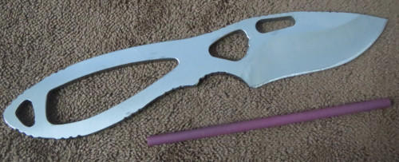
适于红宝石棒磨的刀，是轻微钝了的刀，譬如在切割食物时，刃口不小心碰到瓷质的盘子上了。在生活中，这是最容易搞钝一把刀的方法。待刃口钝掉之后，需要找一张 A4 纸或来自于一本你不喜欢的书上的纸，然后一只手捏住这张纸，另一只手持刀凌空去削它几下，去感受刃口有多么钝。不然，你不知道这把刀在磨过之后锋利程度是否有所改善。钝了的刀，凌空是削不了纸的，只能撕纸。
接下来要考虑的问题是，是用红宝石棒去磨刃口，还是用刃口去削红宝石棒？或者去考虑，为什么现实中的磨刀师傅还是来自电影里磨刀的杀人者给我们的印象是，磨刀是要双手持刀在砥石上来回磨呢？原因很简单，这样更容易观察刃角是否正确，而且更省力。刃面与砥石的摩擦运动是相对的，理论上可以将刀用木工夹或台钳固定，然后双手持砥石去磨刃面，只能凭借感觉去而且无法观察所磨的刃角，但是砥石比刀要重得多，所以很容易觉得累。人在累的时候，就很难去稳定那些本该稳定的东西，不然锋利就很难谈起。
那么，究竟是用红宝石棒去磨刃口，还是用刃口去削红宝石棒呢？都可以。选自己觉得最舒适的。有人觉得听歌，在音效好的房间里用音效好的音响来听会更舒适，而我却觉得在乏味的路上或者刷盘子洗碗时听会更舒适。觉得舒适的，就是最好的。锋利理应蕴涵于这样的舒适，而不是与自己过不去。对于小刀，我会选择用刃口去削红宝石棒，但是对于菜刀，我会选择用红宝石棒去磨刃口。
确定了磨刀方式，接下来就是如何磨，然而到了这一步，没人能够教你，就像没人能够教你如何生活。求解这个问题，需要你的身体做一些规律性的运动，这些运动本身便是答案。但是，我可以给出一些启示。如果你会用要磨的这把小刀削铅笔，只需要略加尝试，就应该能够找到正确的运动。真正困难的是，如何维持这种运动的可重复性。

地球日复一日的自传，年复一年的公转，它是如何维持这一切的？我们活着的每一天，即使是最为平淡的那一天，为了这一天，地球要准备 46 亿年。等到能够深切感受到习以为常的一切，都来之不易时，就差不多懂得如何用红宝石棒行施磨刀这一巫术了。若是希望更加神秘，在施术时，不妨念念有辞：挖了蘑菇累死！哇啦到黑累死！
10 cm 长的红宝石棒可能实在是太短了，仅仅是捏住它，就需要用掉差不多 3 cm 的长度，再加上刀片的宽度，最后能够用来磨刀的棒长大概只有 5 cm。若是有一把可以换批头的改锥，那么只需要一小块纸巾，就可为红宝石棒制作一个很不错的手柄，法力便会瞬间大增。如果没有这样的改锥，也可以用 502 之类的胶水，将红宝石棒粘到一根废弃的中性笔杆上。总之，只要你想延长它，就总是会有办法，真正难以做到的是，认识到它的短处。
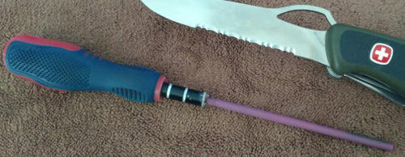
现在，假设已经发现了一种可以驱动刃口削红宝石棒的可重复动作，接下来要面对的问题是，磨一个刃面的时候，什么时候停下来？虽然在熟悉了一套磨刀的动作时，无论是用刃口削红宝石棒，还是红宝石棒磨刃口，都可以有着类似拉小提琴的感觉……太夸张么……那就拉二胡的感觉，但是总不可能一直磨下去，否则整个刀片都磨没了，也不会锋利。
《礼记·大学》曰，知止而后有定，定而后能静，静而后能安，安而后能虑，虑而后能得。知道什么时候停下来，很重要。人生我还不太懂，但是我知道，正在磨的刃面出现卷边时，必须停下来，去磨另一面。只是在刃面出现卷边时，肉眼很难识别，特别是在刃材较硬的情况下，此时需要探手去试。昔人有诗为证，进退两茫然，探手试微疵。
将两个刃面分别称为甲和乙。假设此刻正在磨甲面，已经磨了数十次，如何用手去试甲面出现卷边了呢？对于右撇子，可以用右手拇指甲根部靠下到至第一关节且位于外侧的皮肤（或身体上任何一处足够敏感且安全的皮肤），顺向（沿着刀背到刃口的方向）轻拂乙面，若是锋线处存在轻微的刮擦感，意味着甲面就出现卷边。接下来，应该去磨乙面，直到从甲面能够感受到乙面出现卷边，再停下来。此时，磨刀过程就开始进入收尾阶段。
现在，是乙面出现了卷边，因此需轻磨甲面，以消除卷边。这个过程中，若力度过大，又会导致甲面出现卷边，因此需轻磨乙面，以消除卷边。如此反复，力度需愈来愈轻。最后几次，仅凭刀片的自重，让甲面和乙面交替在红宝石棒上轻轻掠过。那么，收尾阶段何时停止呢？凌空削纸，检验刃口的锋利程度是否令自己满意。对刃口锋利程度的要求会随着磨刀技艺的精进而不断提高。此时，要谨记，揣而锐之，不可长葆。
用刃面的卷边作为止的标志，似乎是一个悖论，因为它是揣而锐之，也是过犹不及。止，难道就是犯错么？本该如此啊，不犯错，怎么知道止？犯错没什么可怕，在磨刀的时候，至少要犯两次卷边的错误，第一次叫矫枉，或者叫定，第二次叫过正，或者叫静。有了定和静，磨刀过程就步入收尾阶段，在这个阶段也是至少要犯两次错，第一次叫安，或者叫微定，第二次是虑，或者叫微静……最后能得。古人的哲学，很容易令不会磨刀的人似懂非懂或自以为懂。
红宝石棒只能对付微钝的刃口。倘若刃口钝得厉害，或者需要重新开刃，只需将红宝石棒换成更为粗砺的金刚锉，磨刀方法不变，磨出两道刃面之后，再用红宝石棒精磨刃口。还有，如果掌握了磨刀棒的用法，那么双手持刀在砥石上磨，很难么？如果会在砥石上磨刀，那么，在野外一块较为平整的石头或者在城里道路两旁的路肩上磨，会很难么？我深信凡是与人有关的事，总是可以万变不离其宗。若寻其宗，一变足矣。
红宝石棒若是用的次数太多，棒面便会淤积许多钢屑，此时，是原本可以削铁如泥的红宝石棒钝了。消除红宝石棒上淤积的钢屑的良方是：用恢复了锋利的刀，从一大块纳米海绵上割下一小块，用这一小块纳米海绵蘸一点水，擦除钢屑。
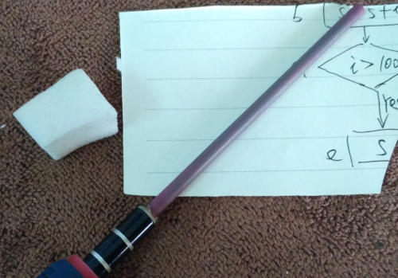
红宝石棒以自身钝掉为代价恢复了刀的锋利。恢复锋利的刀以自身钝掉为代价割取一小块纳米海绵。一小块纳米海绵以自身的脏污为代价恢复红宝石棒的「锋利」。最后，半杯水以重归于大地为代价恢复纳米海绵的「锋利」。所以，世间最锋利的东西，首先是大地，其次是半杯水。
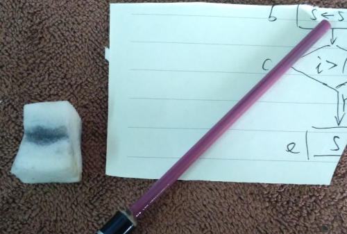
在磨刀过程中，拍了几段视频，将它们上传到某知名视频平台。也许是因为视频中有刀的缘故，被系统屏蔽了。我太容易忘事……这个世界当然不会放弃通过网络让我承认并相信，磨刀是一门巫术。
窗外杨柳依依，美丽的时光，早已从我的指缝里流走，唯剩一些巫术与我为伴。所有的巫术，最终都会失传。Valar Morghulis！Valar Dohaeris！
后记
感谢有眼无珠不识巫术的哔哩哔哩：
- 钝刃削纸测试：搞钝一把锋利的刀，看它沮丧的样子。
- 刃口削红宝石棒：磨刀和削铅笔，有什么不同么？
- 谁削谁都行：红宝石棒为刀俎，刀为鱼肉。
- 利刃削纸测试：钝了的刀，磨好之后，要看它是否恢复锋利，need to kill one piece of paper again.
2 护手
很久以前，我得到了一把 Buck 大钢板（Buck 141）。我之所以叫它大钢板，是因为它的哥哥叫小钢板（Buck 140）。对自己喜欢的东西，取名字要任性。如果我现在还能为它重新取一个名字，可以叫它大鳄鱼，它的轮廓有点像一只潜伏在泥沼里的鳄鱼。

无论是大钢板还是小钢板，都是裸柄一体刀——刀柄和刀片来自相同的母体，一块钢板，除此以外，别无其他；看上去像是半成品，至少会觉得刀柄握起来会硌手。的确如此，而且 Buck 大钢板尤甚，它的每条棱边几乎没做倒角处理，说硌手还是太过于宽容，更应该叫割手。当初得到它时，我不得不买几根金刚锉和几张砂纸，把除了刃口之外的所有棱边打磨到直到我依然不是很满意但是觉得不胜其烦的程度为止。之后，用过几次，切过水果和肉，就搁置了起来。再后来，就把它忘记了，像原本熟悉的人把我忘了一样。实际上，我一向喜欢裸柄一体刀，它们足够结实，用脏了，清洗起来也足够方便……人类洗澡时，不是也要脱掉全部衣服么。
多年以后，当我在柜子里的深处不小心发现它的时候，感觉像是白捡了一把刀。想不起来为什么当初要把它放到柜子里，而不是像其他刀那样放在一个大盒子里，所以只好认为当初把它搁置到一个杳无刀迹的地方，纯属毫无理由。我应该是把理由忘记了。或许人活得越久，忘记的理由就会越多。
我看到刀刃上有个小豁口。也许当年拿它砍了比它还要硬的东西，然后觉得它还不够削铁如泥，于是失望，于是就把它忘记了。这简单的理由，应该比较适合我，很容易放弃，经常连自己也不放过。有了很正当的理由，我可以重新打量它，毫无愧疚，甚至我开始挑剔起来。
我觉得，它的护手太夸张了。这是一把猎刀，不是用于猎杀，更不是用于刺杀，而是用于处理猎物，因此护手就有些多余。北欧猎人使用的猎刀，就通常没护手。如果是当年，我会跑到贴吧上，把我的挑剔化为批判，以此彰显我比这把刀的设计者聪明得多。只是，我已经发现了一个真相好久了。这么多年，我批判过许多东西，可这些东西从未因为我的批判而有所改变。原因很简单，说一个人有病，实在是很容易的事，真正困难的应该是给他药，给他正确的药。我不会治人，但是兴许可以治好这把刀。这事并不难，只需要磨去护手，而且为了保证它在刀鞘内不致于滑脱出来，护手最多只需要磨去一半。
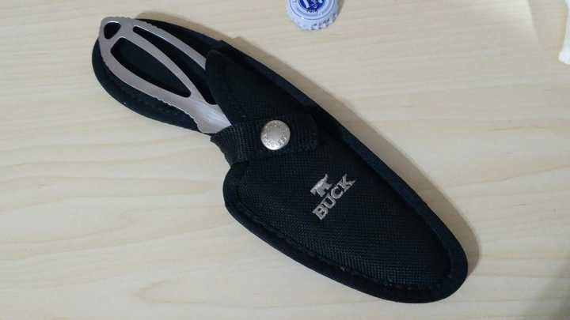
那么，如何磨呢？先找一块比这把刀更硬的东西，譬如我的那几块磨刀石，它们能磨刀，自然能磨护手，但是其中最硬的一块磨刀石是金刚石板——涂敷金刚石粉末的一块钢板——最为适合。我把这把刀的护手放在金刚石板上用力来回磨，用不了多久，就找回了当年金工实习期间钳工的感觉，手酸软无力，取得的成就令人丧气——这可是淬过火的钢板。

屋檐的水能滴穿石头，老妪一生能将铁杵磨成一根针么？愚公或许会说，「我们一定要把山搬到大海里。」虞啸卿麾下的海团长会说，「兄弟们，打剩一个营，老子是你们的营长；打剩一个班，老子是你们的班长；全部死光了，老子到了阴间，还带你们这个死鬼团！」我敬佩豪气干云的人，但豪气不应该是赌气，死硬，或者盲目坚持。
真正的豪气，应该是对自己的无能足够宽容，然后去想办法改进工具或手段。我要做的应该是，提高刀的护手在金刚石板上来回摩擦这种相对运动的频率。我需要一台电机，一个可以将圆周运动转化为直线往复运动的曲柄滑块机构，一根光滑的导轨，把滑块卡入导轨，把我的金刚石板固定在滑块上……机械学，当初可能是一群企图磨掉刀的护手的人发展出来的一门学科。能从一个简单的事情或问题出发，发展出更多的问题，这一切要归功于《2001 太空漫游》里的一只类人猿忽然有一天脑洞大开发现野兽的大腿骨可以砸碎一些东西，后来用这根骨头击退了入侵者，类似于我们现在的一切，也可以归功于武功不怎么样的丘处机路过牛家村遇到了武功更不怎么样的郭啸天和杨铁心。
让问题变得更多，就可以让更多的人更好地活下去。如果人太多，而问题太少，就会发生战争。这是我能想到的药，但没人喜欢有问题。陷入问题里的我们，不安，发愁，抑郁，迷乱……不要怕，根据我的经验，那些看上去难以解决的问题，可以通过制造更多的问题来解决。至于如何制造问题，那要认真审度自己手里可以利用的一切，还需要相信，这世上不会有比自己正要解决的问题更难的问题了，所以我们总是可以通过制造一些更简单的问题，并把这些问题转移给他人，等他们把这些问题都解决了，那么我们的问题就到了迎刃而解的时候。如马克思所言，当问题提出来的时候，就意味着解决它的时机已经成熟了。
如果我可以把我的磨刀石从板条形变成圆周形，那么就不需要可以把圆周运动转化为直线往复运动的曲柄滑块机构以及导轨了。我的确有这样的磨刀石——用于切割金属的金刚石盘片。当初，买它的时候，并没想到要用它磨刀，但是既然它能切割金属，就能够用来磨刀或刀的护手。此外，我还有一个手电钻，以前买来，为的是在墙壁上打孔，安装膨胀螺栓，但是它可以为我提供转速可控的圆周运动。于是，我新提出的问题，很容易通过将金刚石盘片安装在手电钻上的方式解决掉。现在，我有了一把可以削金断玉的新的「刀」了。

事实上，即使有了可以高速旋转的金刚石磨削机，但是把刀的护手加工成我想要的样子，也需要大半个下午。我需要左手持着随着时间的流逝而倍加沉重的手电钻并摁下它的工作按钮，另一只手捏住刀柄，还需要戴上耳机抵抗金刚石颗粒在钢板上摩擦而发出的怪异声音。很快，我发现可以把手电钻搭靠在座位隔板上，这样我的左手近似零负荷，而且手电钻的位置也更为稳定，从而改善了磨削的效率和准确性。

为了解决问题，人应当与自身所处的环境达成足够的和谐。应当利用环境去解决问题，而不是陷入问题之中并与之对抗。对环境的感受，其详细程度是决定问题能否得以妥善解决的关键。纸上谈兵，和下棋一样，会丢失许多现实细节，而且也无法从失败中学到任何有益的知识。
虽然我已将 Buck 大钢板的护手加工成了我想要的样子，但是这整个过程依然是失败的，因为在这个过程中，我竟然没有想到，可以把手电钻用绳索固定在一个马扎上，再用一根扎带来代替我用于摁下手电钻工作按钮的手指，这样我的左手就得到了彻底的解放。当我后来想到这个方案时，觉得之前我很像一个刚会抡野兽腿骨的智人。后来，在用手电钻打磨我的 Buck 小钢板时，不希望因为失误而让刀片面目全非，终于想出了这个方案，算是没给人类丢脸。

3 退刀槽
我只需对自己熟悉的环境略作一些新的安排，便轻易地完成了 Buck 大钢板的护手的修改。我的修改有些粗糙，但我深信，只要继续改进工具和手段，便可令其足够精致。我对精致的生活一向缺乏追求，而且现在还没有到追求精致的时候，我觉得这把 Buck 大钢板还需要一个退刀槽。
所谓退刀槽，就是刀柄与刀刃之间的一个槽，由于这个槽位于刃区的清根位置，因此也称清根槽。这个槽的用途是，在磨刀的时候，可以避免磨刀石无意中破坏刃区的清根，因此这个槽也可以叫越程槽。似乎是一个悖论，退刀槽的用途是保护清根区域，但是它的存在，本身就是对清根区域的破坏。也许我们总是会认为，有秩序的破坏要好过无意识的混乱的破坏。
金刚石磨片和手电钻构成的金刚石磨削机，我已驾轻就熟，于是未假思索便在刃区清根处开了一个槽。干完之后，才发现它的位置不是很正确，有些偏离刀柄的护手区域。倘若将它再略微扩大一些，可以让位置与护手邻接，但尺寸太大的退刀槽，又失于夸张。
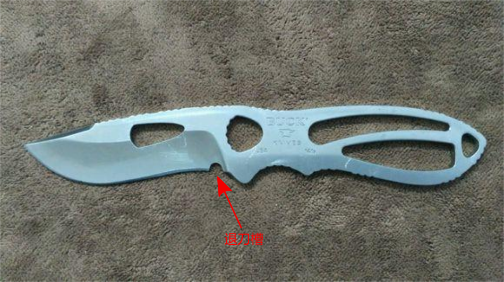
机械加工，这门技艺的特点是，工件一旦失误了，就绝无可能修正，要么容忍，要么报废、回炉、重造，否则唯一的出路是错上加错。人类的双手虽然非常灵巧，但是也非常容易出错。所以，现代的机械加工，大都以机器去制造机器，为了达到这个境界，人类用自己的双手工作了上万年。但是，现在机器人学的研究者，希望能够制作出像人类那样灵活的双手，我觉得他们即便能制造出这样的机械手，但是不要指望它不容易出错。
我决定把错误犯得更大一些，把退刀槽再开得足以放下我的食指那么大，从而变成指槽。指槽可以让食指更接近刃区，从而便于用刀去做更为精细的切割，譬如削铅笔，刮胡须，修指甲或者割断衣服上的线头。
经过一番认真的规划，并采用了一种叫做耐心的磨削工艺，又用了大概小半天的工夫，开出的槽恰好能放得下我食指第一节，而且似乎也不是很难看，可谓大成若缺，其用不弊。
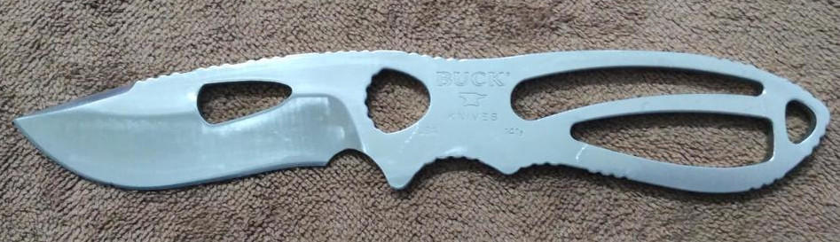

理论上，接下来的剧情是，我应该携刀归隐山林，从此过上淡泊明志的生活，然而，即便是伊甸园也是有蛇的。在折腾这把刀的过程中，我觉得手电钻和金刚石磨片构成的山寨磨削机的效率太低了，我需要更专业的工具——角磨机和台钳，我手里现有的资源，用钱去获得它们是最省钱的办法。
在角磨机和台钳到手几天之后，我觉得有必要试用一下。这时，我发现之前我加工的指槽的表面有许多金刚石磨片留下的粗糙痕迹，现在我可是有角磨机的人了……于是便用台钳卡住刀柄，用角磨机的磨片外缘去精修指槽。然后，我的第一次使用角磨机的经验是，它足以毁掉指槽附近大约 7 mm 长的一段刀刃，代价是只需要略微的不小心。

在刀刃被毁的那一刻，万念俱灰，便开始自暴自弃，任性地让毁掉的刀刃变成了指槽的一部分。即便如此，偌大的指槽，使得这把刀无论从哪个角度去看，无论有着怎样的握持感受，都该叫残刀。
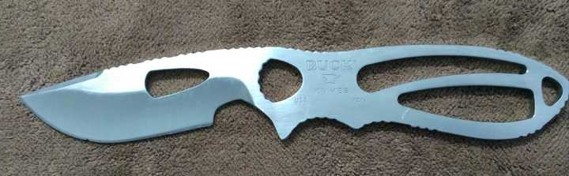
发生在我身上的故事，结局大抵皆是如此的不好，好在我早已习惯了。
4 角磨机
在我的想象中，一个很少接触机器的人，第一次拿起角磨机，推动开关按钮的时候，他的感受或许类似于一只蟑螂爬到我的手上。
角磨机是一种很危险的手持式电动工具，它不仅能毁掉我的 Buck 大钢板靠近指槽的一段 7 mm 长的刀刃，也能毁掉我的眼睛，我的耳朵，我的脸，我的脖子，我的手……我身体上所有裸露的部位，都在它的打击范围之内。我之所以还能无恙并坦然地写这篇文章，是因为使用它的时间加起来应该没超过 5 个小时。
我应该是个懦夫。在第 1 个小时里，我就用山地车长途骑行时戴的魔术头巾把脸包上了，把同样是骑行时戴的那种可以露出一半手指的战术手套也戴上了。由于近视，眼镜原本就有的，但是我觉得我的眼镜太小了。之后，又找了一件破旧的保暖上衣，用它的袖子把它系在腰上，当作围裙。把自己一个人反锁在房间里，防止他人推门而入，被我误杀。
在第 1 个小时里，我也花了许多钱。在网上订了一打 12 层棉纱做的口罩，一打浸胶的防磨手套——编织类手套是不可以的（要重复三遍），还有一副专业的护目镜。我觉得应该再订一套工装，因为我的上衣，一向没有可扎紧袖口的功能……不过，考虑到自己有几根带魔术贴的松紧扎带，等没衣服穿的时候再说。
在之后的 4 个小时里，直至现在，每当我在被我临时当作加工车间的一间闲置的房间里拿起角磨机时，我就会想，为什么我又忘记把我骑电动车用的头盔带来了，下次回家吃午饭的时候，一定要记得带来。
如果是夏天，路边修理铺里的伙计，会穿着短袖衬衫和大裤衩，脚上踏着拖鞋，蓬头垢面，叼着烟头，哼着歌，用着连保护罩都不装的角磨机切割钢料。倘若他前来造访，看到我一个人躲在安静的房间里全副武装地用角磨机打磨一把刀的表面，应该会笑我像个娘们。女性比男性长寿，看来是有道理可讲的。
说到这里，我忘记介绍一下我的角磨机，然而似乎也没什么可介绍的。它的核心组件是每分钟旋转 11000 次的电机。当这个电机的输出端装夹了树脂材质的磨片，便可以打磨金属表面。倘若将磨片换成更薄的同样是树脂材质（内含无数砂粒）的切割片时，便可以用于切割金属板料或棒料之类。用的时候，一只手握住机头侧面的手柄，另一只手持住机身并用拇指推起工作按钮，然后，要么懦弱，要么勇敢，这是个问题……在考虑这个问题之前，至少先把机头的防护罩装上并调节到合适的位置吧。
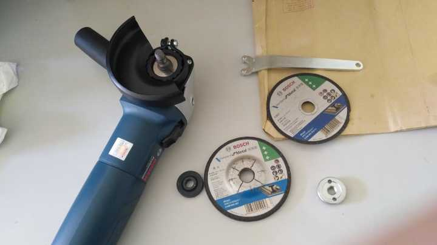

磨片的直径规格是 10 cm。角磨机每分钟旋转 11000 次，这意味着磨片边缘上的任意一点，每分钟走过的路程是 3.456 公里。当磨片破碎时，边缘的碎片飞出去的速度大概是 57.6 米/秒，这差不多是古代弓箭手射出的飞箭的速度。假设我连续使用角磨机 5 个小时，那么磨片边缘上的任一点走过的路程是 1036.8 公里。北京市第三区交通委提醒我，道路千万条，安全第一条，行车不规范，亲人两行泪。
怀着畏惧之心，用双手捉住角磨机，把磨片轻轻摁在钢板的表面，在磨片的边缘，可以看到火花四溅，像美丽易冷的烟花在白昼喷射。这或许是乏味枯燥的机加工领域里第二的浪漫，第一当然是来自焊工的现场。在我欣赏火花的时候，手机在口袋里来电振动了起来，我的 Buck 大钢板靠近指槽的一段 7 mm 长的刀刃顷刻间灰飞烟灭。

最后，我看着手里的残刀，不知是怪罪手机还是怪罪火花。怪罪火花，把美丽作为悲伤的源头，这样会更艺术一些……做人应该艺术一些。我决定下次不带手机了。
5 开刃
磨刀，若是想磨好，任何一个真正在这方面很有经验的人都会告诉你，要有一双足够稳定的手。在我看来，使用角磨机为刀片开刃，也是如此。
开刃，也叫开 V，因为刃区的横截面的轮廓很像字母 V。现代刀具，通常要开两次刃。第一次是把刀体表面磨削成两个或平坦或凹陷的两个斜面，对应的机加工术语应该叫研磨。在第一次开刃的基础上，在刃缘区域开出狭窄得像两条曲线一样的两个斜面，这就是第二次开刃，对应的机加工术语应该叫珩磨。平日里，打磨用钝了的刀，本质上也是对刀片重新作第二次开刃，只不过通常开得可能不如刀子出厂时那般精致罢了。在古代，这两个开刃过程是合起来的，而且古人应该不会太在意刀子磨得是否好看。

我打算用我的角磨机为 Buck 大钢板开刃。为一把已经开了刃的刀开刃，此事听起来不太正常。的确如此，不过这既非开始，亦非结束。从不小心毁掉一段刀刃时起，事情就变得不正常了，以致我现在无法确定能否开出正常的刃，也无法许诺，如果开刃失败了，依然对它不离不弃。
这把刀的刃区，原本的研磨方式是凹磨，即刃面向刀体内部略微凹陷，因此刃区更薄，二次开刃之后会非常锋利，缺点是刀片强度不足，不适于砍撬。不过，它的设计师应该考虑了刀片的强度，所以刀背很厚，大概 4.5 mm。我打算把它改成平磨，亦即让刃区的横截面更像 V，而且还要让刀背变薄一些。买的是刀子，并非钢板，我觉得无论是刀匠还是用刀的人都应该关心刀刃几何学，而且每个人都应该建立自己的刀刃几何学，它不仅能帮助你挑选适合自己的刀，也能帮助你用角磨机开刃。
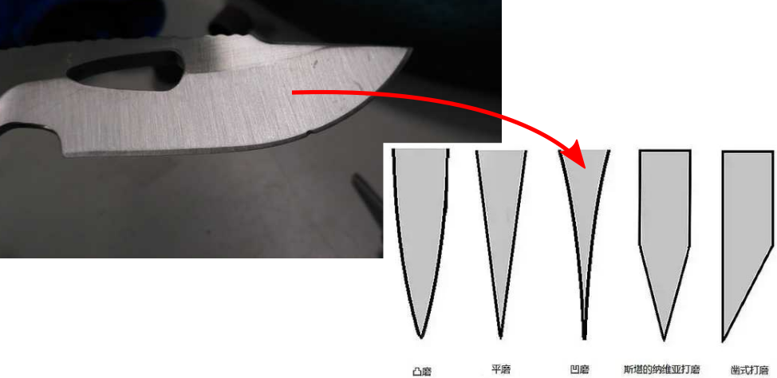
把钢板的表面加工成特定的形状，需要认真规划用于金属切削刀具的运动轨迹。我所用的金属切削刀具是角磨机上的磨片，在它面前，我的 Buck 大钢板是案上待杀的鱼肉。倘若我用的是数控磨床或铣床，那么刀具运动轨迹的规划就变成了数控编程。我比数控机床更富有智慧和灵性，但是我敢保证，我的角磨机开出来的刃肯定要比它们差许多。装夹在数控机床上的磨具或铣刀所走的轨迹，每一步都能保证足够正确，而我的角磨机所走的轨迹，即使我能保证双手足够稳定，也注定会充满错误。
我期望的正确，应该是对自己所犯的错误不停审视并逐步予以缩小之后的结果，古人用于推算圆周率所用的割圆法便是如此，高等数学中的微分、积分以及变分也是如此。以错误的过程去不断逼近理论上完美的结果，一直到自己觉得累了，就停下来。美之所以为美，无非是去犯更多更细微的错误罢了。只要想清楚这一点，美与丑，便可以统一起来。一个人，只要不犯大的错误，应当容许小错不断，这是他的人生步入完美之境的必经之路，而且犯错最好要趁早，年龄会放大错误的级别。小错与大错之间并不存在古往今来不绝于耳的那些名言警句里所肯定的那种必然的联系。我们都会犯错，之所以会犯大错，要么是缺乏目标，要么是虽然有目标，但是缺乏足够的耐心。
用台钳卡住 Buck 大钢板的柄部，让刀片与地面近似平行。双手持住角磨机，用磨片的边缘轻轻抵在原刃区的清根处，再略微向刃口倾斜一个角度——我打算改成的平磨的角度。现在我无法测量这个角度，只能凭目测大致给出。我要熟悉这个姿势，用感觉去努力记忆自己的双手，双臂，上身及至全身的状态。接下来，略微抬起磨片，开启机器，再把磨片落回原处，然后平缓移动角磨机，让它向刀尖区域行进，如此便可形成一次完整的研磨周期。我无法确定这个周期要轮循多少次，只是知道我的目标是把一张下凹的曲面磨削至近似平面的程度。
事实上，这个过程重复不了几次，就需要停下来，向刀片喷一些水降温。在理论上，磨片上的砂粒高速从刀面上掠过，瞬间温度可以大于 800 摄氏度，达到钢材的相变温度，从而导致刀片表层退火。退火的刀子截一根网线或削一根竹筷都会卷刃。为了检验这个理论是否正确，我毫无耐心地连续进行了十几个周期的研磨，结果在刃口区域出现了一块黑斑。位于这块黑斑区域的刀锋，用指甲推它几下，就会倒伏。
若是抡着角磨机，每行进几个研磨周期，就要把它放下来，向刀片喷水降温，那么在重新拿起角磨机研磨时，就需要重新确定磨片的倾斜角度。这样，整个开刃的过程所需要的工时就会被延长到难以想象的程度。为了追求准确，间隔一段时间，我需要用马克笔在刀面上划几条横截线，用它探测磨片的行进轨迹是否理想，这个办法在磨刀的时候也可以用，至少在觉得自己还是个新手的时候用。
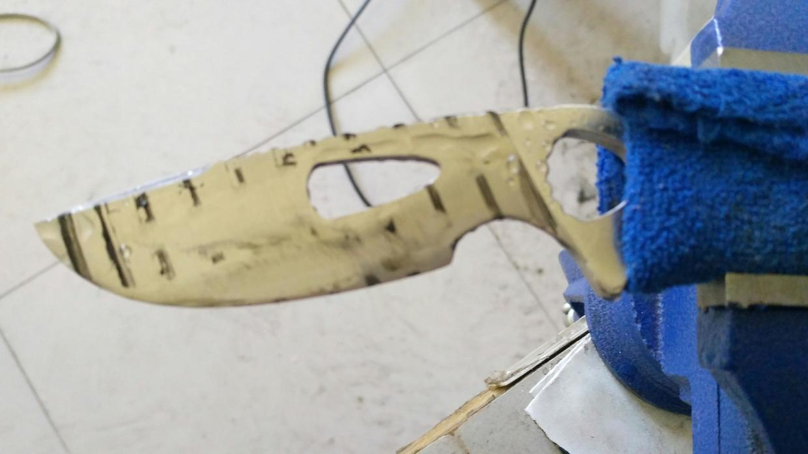
开刃的时候，要有耐心。不过，耐心并非坚持。觉得烦了，完全可以停下来，去干正事。我的正事，是在座位上不停的敲键盘。养生专家说，久坐伤身，要多活动身体。我的新看法是，与其去跑步，做俯卧撑，跳广场舞，不如每隔两三个小时就去抡半个小时的角磨机。
抡角磨机的时候，很容易忘记时间，因此就不会感到任何的乏味。或许是精神高度紧张起来的缘故，但这种紧张应该无害，与欣赏一部惊心动魄的好莱坞大片相差不大。还有，角磨机不仅适用于刀片的减肥，对于我的减肥，效果也不错。一周下来，我的体重在没有任何强迫的条件下不知不觉减了差不多 1.5 公斤。至于角磨机可能带来的危险，只要防护措施得当，受伤的概率应该小于在路上跑步被车撞到。从乐观的角度去想，等我成为了一名业余刀匠，不仅能够拥有一副健康的身板，兴许还能够从土豪刀友那里挣一些钱，把角磨机升级成工业级的砂带机。
同样都是动手，为什么我每天敲那么久的键盘却没有起到丝毫的减肥效果？这说明，手工开刃应该是一种全身性的有氧运动。为了使得所开的刃区足够平整，角磨机并非简单地用手持住，让磨片在刀片上左右移动，至少这只是表象。我的做法是，以最为稳定且舒适的姿势站立，将角磨机置于腰间，上肢夹紧身体，努力锁定腕、肘、肩等关节，使得角磨机能够获得足够稳定的静止位姿。然后，让整个身体缓慢地左旋或右旋，如此便可以实现角磨机的移动轨迹是在一个平面上，并且磨削深度也能得到有效控制。这样做，虽然磨片的运动轨迹是一段弧线，但是对于 Buck 大钢板这样的小刀而言，这段弧线近似直线。这些便是用角磨机对刀片开刃时最重要的秘诀了。
当我在磨刀的时候发现这个秘诀时，就认定无论什么手工活，若想做得足够好，除了准确的目标和足够的耐心之外，还应当设法通过身体或其他方式去维持手的稳定。传说中的那双足够稳定的手，也许并不存在，需要记住这一点。类似地，倘若你觉得自己数学不好，也许不应该刻意补习数学，真正应该补习的是物理学。如果爱情出了问题，真正应该修复的，是生活。
6 不悲
当我用金刚锉手工去打磨刀柄棱角的时候，当我用装夹了金刚石磨片的手电钻磨除刀子的一部分护手的时候，当我用角磨机对刀片重新开刃的时候，当我觉得只有像这样运用排比能够体现我有多么想拥有一台砂带机的时候，我就买了一台砂带机。在这个故事里，这是我最后的一笔消费。说成投资，我心里会更舒服一些。
之前对这把刀所作的任何事，都可以在一台砂带机上完成。砂带机要比角磨机要安全得多。砂带虽有可能断裂飞出，但至多是毁容。然而，等我的砂带机到手后，发现若是用它开刃，实在太为难它了。它的个头大概只有Ed Fowler 那台工业级砂带机的几十分之一那么大，用来毁容可能都会有些困难。不过，继续采用那个叫作耐心的工艺，用这台迷你型砂带机依然可以把角磨机开出来的刃区打磨光滑，而且与我在磨刀石上手工磨刀的速度相比，就像是一只永不睡觉的兔子在和乌龟赛跑。

现在有些后悔，像角磨机和砂带机这样的工具，应该更早几年买，或者等我老了的时候再买。那时我会有更多的时间和更多的无聊。何况，买它们也花不了几个钱，加起来，甚至还不如一把我觉得价格还算实在的刀子贵。玩刀的人，一开始大多期望自己所买的名贵的刀能够削铁如泥，然而真正能够削铁如泥的，却是金刚锉、角磨机、砂带机、车床、铣床、磨床、钻床、电火花/激光切割机……纳米丝……这些不怎么在大众视角里出现的工具。那些真正美好的东西，或许未打算按照我们预想的面目出现过。
会用角磨机开刃的人未必会用砂带机。好在 Ed Fowler 在《Knife Talk II》的《How to grind the blade》一文中给出了他使用砂带机开刃的心得以及安全方面的建议。由于我已经用角磨机开了刃，而且我的砂带机与他的相比，只是个很安全的玩具，所以从他的文章里，我能汲取的只是他在砂带机前持刀姿势方面的经验。

Fowler 的持刀姿势是，一只手的拇指和其余四指捏住刀柄，用于控制刀片的移动方向——让砂带从刃区清根向刀尖移动，而另一只手的拇指的指甲抵住刀尖，用于保持刀片的平衡。我的体验是，要保持刀片的平衡，捏住刀柄的手要向自己的身体的方向用力，而抵住刀尖的拇指的指甲要向远离身体的方向用力。确定了持刀姿势之后，接下来要锁定手腕、肘以及肩等关节，让身体向左或向右晃动，以驱动刀片在砂带上移动。这是 Fowler 的开刃秘诀，和我的角磨机开刃秘诀异曲同工。

Fowler 为了方便用拇指的指甲顶住刀尖，所以他的指甲留得有点长。我没有他那样长的指甲，又怕被砂带磨到手指，而且刀片被磨得发烫的时候，手指头也吃不消，还要担心不小心刀片脱手会切到手指，所以在操作砂带机时，我戴了一副浸胶手套。期间，遇到一起砂带开胶断裂的事故，微惊无险。要听 Fowler 的，不论是用砂带机开刃还是磨刀，如果砂带的基材是软布，刃口应当顺着砂带的运动方向，否则后果不是很好设想。

Fowler 强烈建议不要戴手套，他的理由是，（1）手套太贵了，用不了太久，而且还会在开刃的过程中剥夺你所需要的触觉；（2）戴手套比裸手更危险，手套容易破损，被砂带机卷住，导致整只手受伤。
网络上的普遍观点也是建议不要戴手套，但是我觉得网络上实在很容易人云亦云。国标 GBT20512-2013《手部防护防护手套的选择、和使用和维护指南》7.1.4 节规定，操作转动机械作业时，禁止使用编织类手套。我戴的是浸胶手套，不算违规，而且在打磨刃面的过程中，手套的食指末端部分不小心被砂带磨到几次，并没有卷住感。浸胶手套至少对于我用的这种玩具级的砂带机是安全的。
这把刀每天要在砂带机上受一个多小时的轮回之苦。差不多一周之后，它终于得到了彻底的解脱。飞鸟尽，良弓藏。我把全部的加工器具收了起来，又把桌面和地板上积攒了半个多月的一片狼藉清理干净。我想，我可以站在窗前，和这把面目全非的刀看看窗外的春天了吧，在这个晚春的周末下午，在夕阳的余光温和地抚摸着树上的新叶的时候。
与那些开了上百次刃的职业刀匠相比，我刚习得的开刃技能必定相差甚远。与半个月之前的我相比，现在的我像是 Fowler 所说的那样，达到了可以在钢琴上弹出一闪一闪亮晶晶，漫天都是小星星的级别了，这是一件我必须为之骄傲的事。遗憾的是，刃区的清根没能做得足够好。一开始用角磨机开刃的时候，我就犯了一个严重的错误，忘记了给清根区域留出足够的余量。还有，我原本是想开出平面的刃区，但是在砂带机上很容易形成凸刃（也叫蛤刃）的效果，导致刃面略微外凸。倘若把砂带张得更紧一些，应该可以让刃面更平。
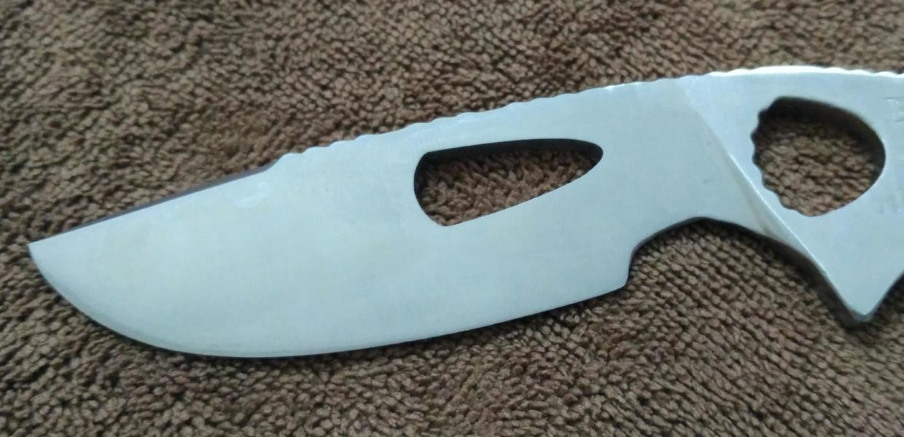
在我收藏的所有的刀子里，我觉得这把刀是我真正拥有的第一把刀。我打量着它，直到天黑下来。在收刀入鞘的时候，我给它取了一个新名字，叫不悲，然后把它放在了随身包里。